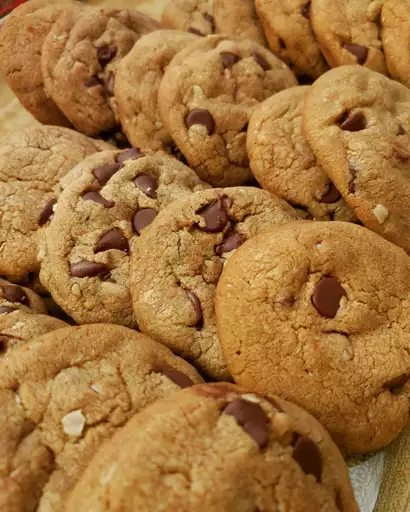

Cookies
This chocolate chip cookie recipe makes delicious cookies with crisp edges and chewy middles.

How to Make Chocolate Chip Cookies
Ingredients
Chocolate Chip Cookies Ingredients
- Butter: This classic chocolate chip cookie recipe starts with two sticks of butter creamed with white and brown sugars. The blend of sugars creates a perfectly balanced flavor.
- Eggs: Eggs add moisture and act as a binding agent, which means they help hold the dough together.
- Vanilla: Vanilla extract enhances the overall flavor of the chocolate chip cookies.
- Baking soda: Baking soda acts as a leavener, which means it helps the cookies rise.
- Water: A bit of hot water creates steam as it bakes, working with the baking soda to puff the cookies up.
- Salt: A pinch of salt enhances the flavors of the other ingredients, but it won't make the cookies taste salty.
- Flour: All-purpose flour helps create gluten, which adds structure to the cookie dough.
- Chocolate chips: Of course, you'll need semisweet chocolate chips! You can use dark or milk chocolate chips if you prefer.
- Nuts (optional): Walnuts are optional, but they add nutty flavor and a welcome crunch.
Return to main page